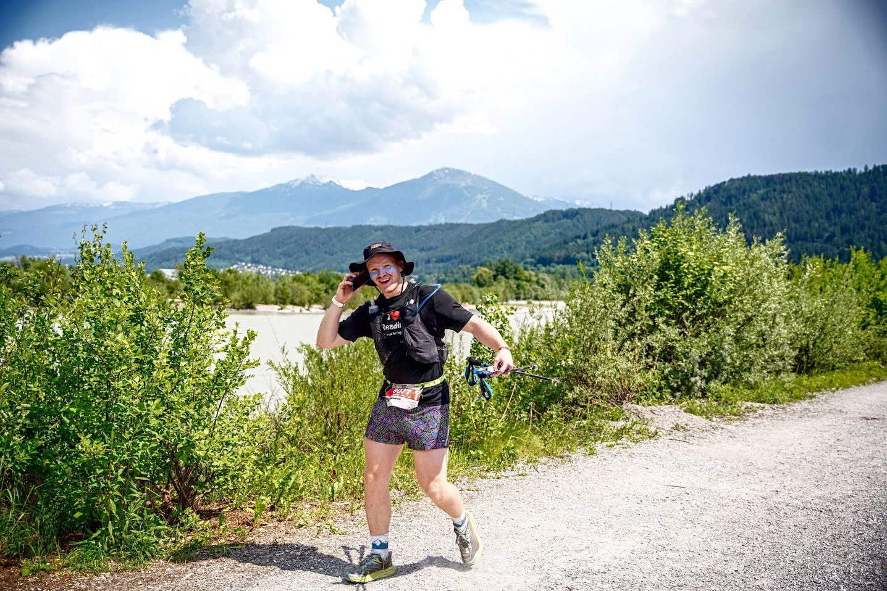
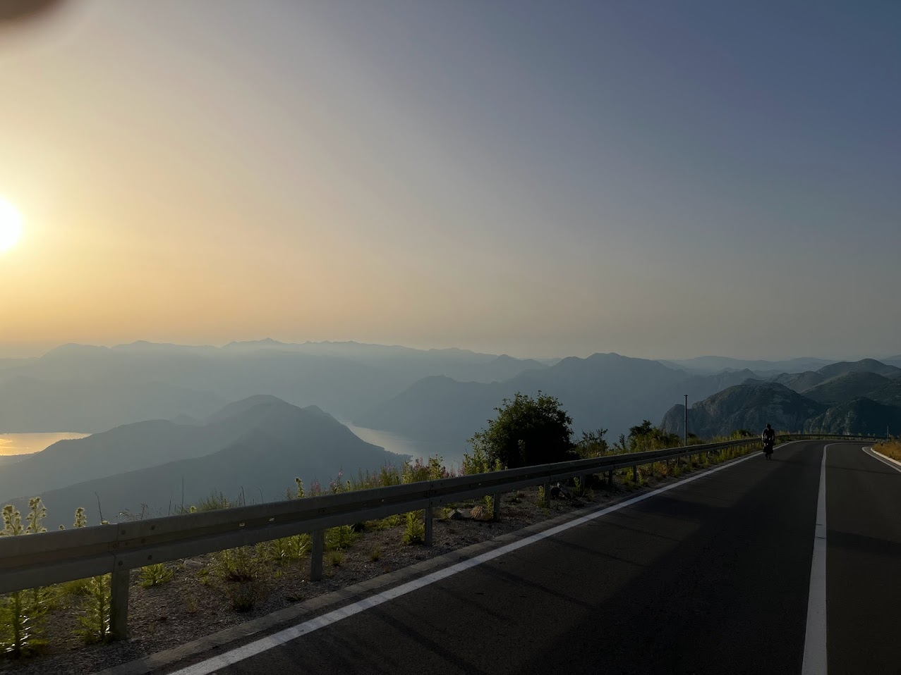
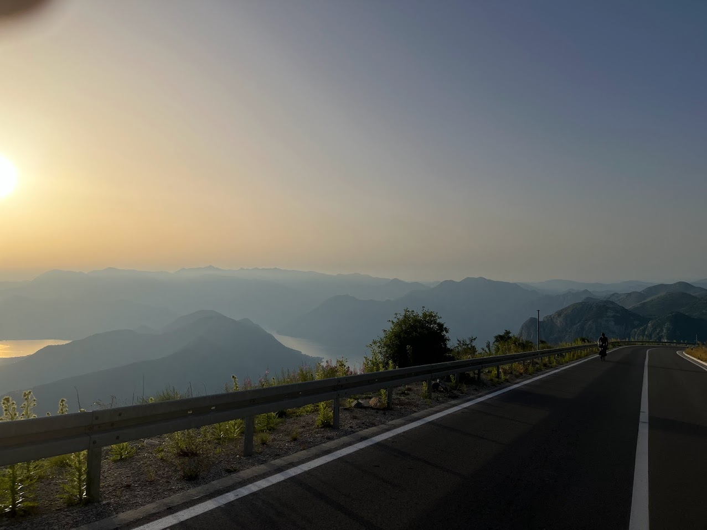

Rowing
I began rowing in 2019 as a novice with the University of Calgary Rowing Club. I have been the men's captain for the last 3 years, and I started competing in larger and larger regattas. I have attached an image below of me competing in the Collegiate 4+ at the Head of the Charles Regatta in Boston this October. This was an absolutely amazing opportunity.

We ended up getting 13th in this race. We also placed fifth in the Varsity Men's 8+ at nationals in November. This was our best ever placement as a men's team so far.
Running
Throughout middle and high school I was a swim racer. In the town of Fernie where I grew up, the pool closed for the summer, so in order to stay busy I started running. I had only trail run prior to moving to Calgary. In Calgary, I run fairly often to get fresh air during the winter. It is also a nice break from all of the other tasks that I have throughout the day. Last year, I lived in Switzerland and could only really run during the week because the rest of my schedule was so busy. I ended up signing up for a trail running race in Italy, and it gave me the ultra - bug. I ended up signing up for many more longer and longer races, until June 2nd when I did a 100km running race in Innsbruck Austria. The photo below is me when I had finished 80km of the race and was on the phone with my mom.
I wore the "I love reading shirt" in every race.
Cross Country Skiing
I began cross country skiing in Grade 7. I started with the Fernie Nordic Racers, but slowed down through the end of high school because I was more serious about swim racing. When I moved to Switzerland I fell in love with the sport again and started racing all over Europe. This photo is from when I finished the largest race in the world. It is called Vasaloppet and it has 16000 competitors.

Biking
I started biking more during covid, and mostly did gravel and mountain biking. At the end of my internship my dad came and we rode from Switzerland to Romania through all of the balkan countries. It was an amazing experience and I have attached some of the photos here.
 
